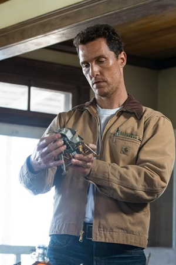
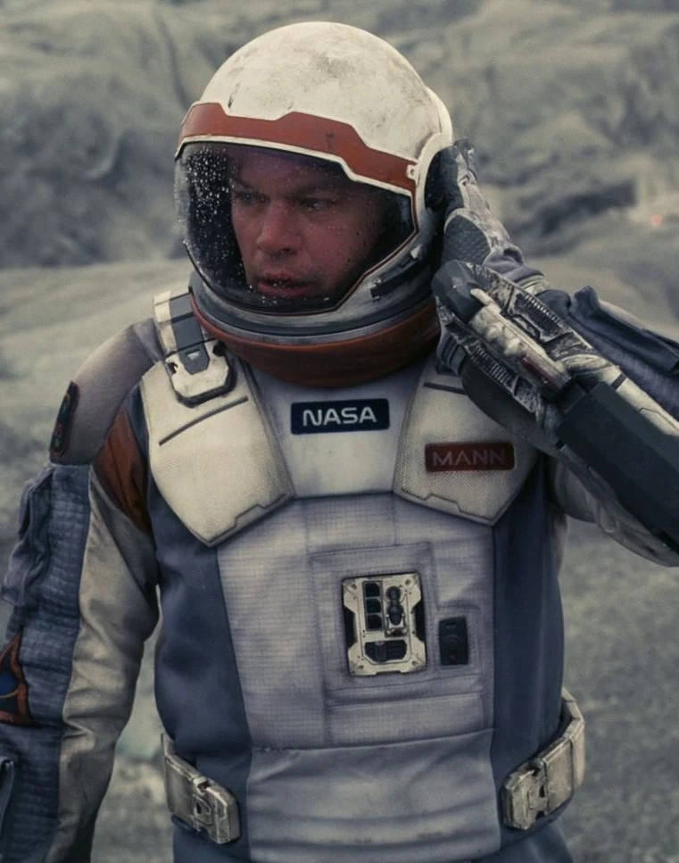

Mathew McConaughey
Joseph Cooper
Ancien pilote de la NASA reconverti en fermier, choisi pour mener la mission spatiale en quête d'une nouvelle planète habitable.
Dans un futur proche où la Terre se meurt, Cooper, pilote et ancien ingénieur, doit faire le choix le plus difficile de sa vie, quitter ses enfants pour embarquer dans une mission spatiale désespérée à la recherche d'une nouvelle planète habitable pour l'humanité.
Acteurs et membres de l'équipe qui ont contribué à la réalisation de ce film.

Ancien pilote de la NASA reconverti en fermier, choisi pour mener la mission spatiale en quête d'une nouvelle planète habitable.
La fille de Cooper, brillante scientifique à la NASA qui travaille à sauver l'humanité depuis la Terre.
Astronaute et scientifique, fille du Professeur Brand, membre clé de l'équipage.
version jeune de Murph, curieuse et proche de son père avant son départ.
Physicien génial de la NASA et mentor de Cooper, architecte secret de la mission.
Robot de combat reconverti en assistant de l'équipage, loyal et sarcastique.

Chef de la première expédition spatiale, dont la vraie nature se révèle tardivement dans le film.
Pour Interstellar, Nolan souhaitait explorer la relativité et les trous de ver de manière scientifiquement rigoureuse, tout en racontant une histoire profondément humaine sur l'amour et le sacrifice.